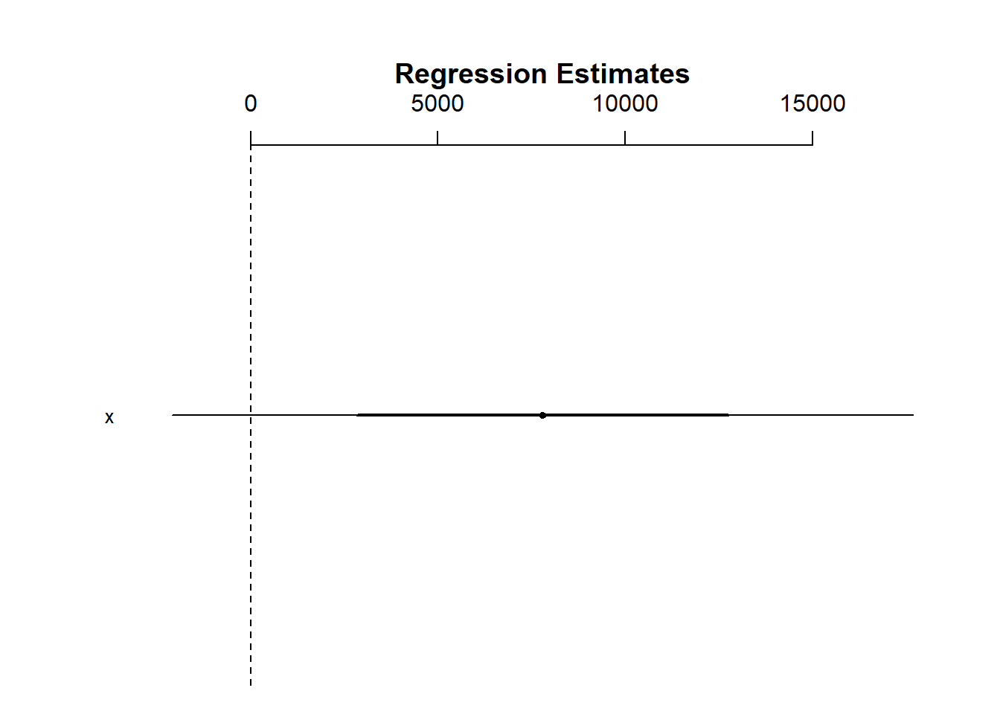
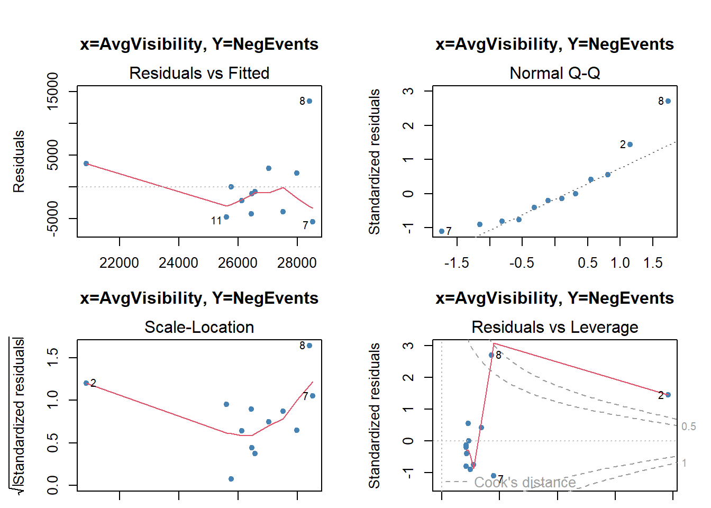
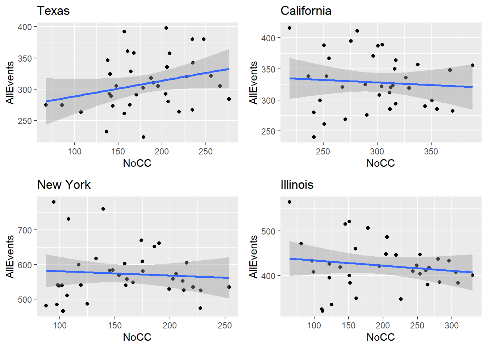
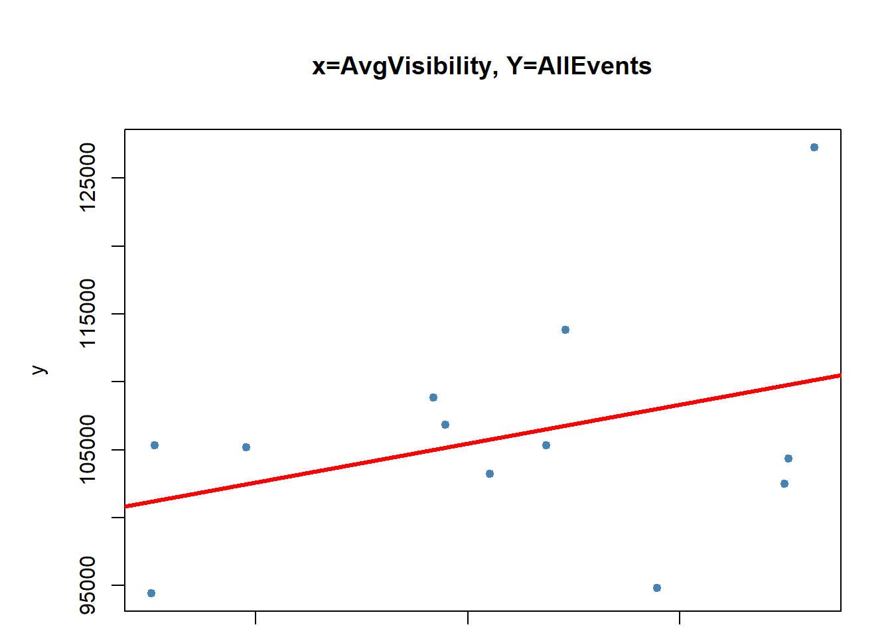
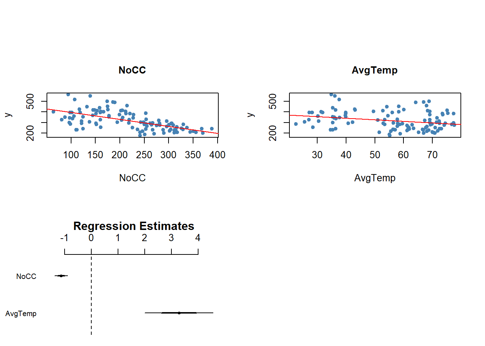
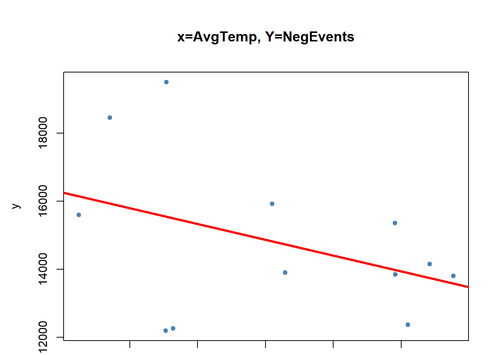

summarize_weather_data_old <- function(w) {
# select relevant columns only
w_sum =
w |> select(DATE,Sunrise, Sunset, HourlySkyConditions,HourlyVisibility)
# extract date/hour and cloud coverage column
w_sum["datehour"] <- substr(DATE, 0,13)
w_sum["cc"] <- ifelse (grepl("FEW|CLR", HourlySkyConditions), 1, -1)
# summarize the cloud coverage and visibility per hour
w_sum1 =
w_sum %>%
group_by(datehour) %>%
summarise(
CC=sum(cc),
Visibility=mean(as.numeric(HourlyVisibility))
)
# summary the cloudcoverage and visibility per month
attach(w_sum1)
w_sum1["Year"] = as.numeric(substr(datehour, 0,4))
w_sum1["Month"] = as.numeric(substr(datehour,6,7))
w_sum1["NoCC"] = ifelse(CC > 0, 1, 0)
w_sum2 =
w_sum1 %>%
filter (!is.na(Visibility)) %>%
group_by(Year,Month) %>%
summarise(
NoCC = sum(NoCC),
AvgVisibility = mean(Visibility)
)
return (w_sum2)
}
summarize_weather_data <- function(w) {
# select relevant columns only
w_sum =
w |> select(DATE.x,HourlySkyConditions,HourlyVisibility)
# extract date/hour and cloud coverage column
attach(w_sum)
w_sum["datehour"] <- substr(DATE.x, 0,13)
w_sum["cc"] <- ifelse (grepl("FEW|CLR", HourlySkyConditions), 1, -1)
# summarize the cloud coverage and visibility per hour
w_sum1 =
w_sum %>%
group_by(datehour) %>%
summarise(
CC=sum(cc),
Visibility=mean(as.numeric(HourlyVisibility))
)
# summary the cloudcoverage and visibility per month
attach(w_sum1)
w_sum1["Year"] = as.numeric(substr(datehour, 0,4))
w_sum1["Month"] = as.numeric(substr(datehour,6,7))
w_sum1["NoCC"] = ifelse(CC > 0, 1, 0)
w_sum2 =
w_sum1 %>%
filter (!is.na(Visibility)) %>%
group_by(Year,Month) %>%
summarise(
NoCC = sum(NoCC),
AvgVisibility = mean(Visibility)
)
return (w_sum2)
}
summarize_state_weather <- function(w) {
w_sum =
w %>%
group_by(Year,Month) %>%
summarise(
NoCC = mean(NoCC),
AvgVisibility = mean(AvgVisibility)
)
return (w_sum)
}EPPS 6323: Semester Project
Weather has impact on reported news/events
Library setup
Data load functions
remove_night_records <- function(ds) {
# create a table of sunrise and sunset time per day
ss = ds %>% select(DATE, Sunrise, Sunset) %>% filter(!is.na(Sunrise))
attach(ss)
# deduct 1 hour before sunrise, and add 1 hour after sunset since
# there is still daylight before and after official sunrise and sunset
ss["Sunrise_adj"] = Sunrise - 100
ss["Sunset_adj"] = Sunset + 100
attach(ss)
ss["Rise"] =
sprintf("%s0%s:%s:00",
substr(DATE,1,11),substr(Sunrise_adj,1,1),substr(Sunrise_adj,2,3))
ss["Set"] =
sprintf("%s%s:%s:00",
substr(DATE,1,11),substr(Sunset_adj,1,2),substr(Sunset_adj,3,4))
ss["SS_day"] = substr(DATE,1,10)
print (nrow(ss))
# merge hourly records with sunrise/sunset daily records
attach(ds)
ds["day"] = substr(DATE,1,10)
ds = left_join(ds, ss, by = join_by(day == SS_day))
ds = ds %>% filter(DATE >= Rise & DATE <= Set)
return (ds)
}process_weather_data <- function(file_name) {
weather_ds2 = read.csv(file_name) |>
select(DATE,Sunrise, Sunset, HourlySkyConditions,HourlyVisibility)
return (remove_night_records(weather_ds2))
}Load and cleanse GDELT data
gdelt = read.csv('Gdelt_data.csv')
attach(gdelt)
gdelt["Month"] = as.numeric(substr(as.character(MonthYear),5,6))
gdelt["PosEvents"] <- Verbal.Cooperation+Material.Cooperation
gdelt["NegEvents"] <- Verbal.Conflict+Material.ConflictLoad, cleanse and merge weather data sets
weather_ds1 = read.csv('Temp_data.csv')
weather_temp =
weather_ds1 %>%
group_by(State, Month_num) %>%
summarise(AvgTemp=mean(Mean.Temp))
# Illinois weather, using Chicago only for Illinos,
# because .csv doesn't have complete sunrise/sunset info
weather_ds2 = process_weather_data('2019 chicago weather.csv')[1] 365weather_IL_cc = summarize_weather_data(weather_ds2)
weather_IL =
left_join(summarize_state_weather(weather_IL_cc),
weather_temp %>% filter (State == 'Illinois'),
by = join_by(Month == Month_num))
# California weather
weather_ds2 = process_weather_data('2019 CA san diego weather.csv')[1] 365weather_CA_cc = summarize_weather_data(weather_ds2)
weather_ds2 = process_weather_data('2019 CA san francisco weather.csv')[1] 365weather_CA_cc = rbind(summarize_weather_data(weather_ds2),weather_CA_cc)
weather_ds2 = process_weather_data('2019 CA san jose weather.csv')[1] 365weather_CA_cc = rbind(summarize_weather_data(weather_ds2), weather_CA_cc)
weather_ds2 = process_weather_data('2019 los angeles weather.csv')[1] 365weather_CA_cc = rbind(summarize_weather_data(weather_ds2), weather_CA_cc)
weather_CA =
left_join(summarize_state_weather(weather_CA_cc),
weather_temp %>% filter (State == 'California'),
by = join_by(Month == Month_num))
# New York weather
weather_ds2 = process_weather_data('2019 NY buffalo weather.csv')[1] 365weather_NY_cc = summarize_weather_data(weather_ds2)
weather_ds2 = process_weather_data('2019 NY nyc weather.csv')[1] 365weather_NY_cc = rbind(summarize_weather_data(weather_ds2),weather_NY_cc)
# Yonkers has no complete sunrise and sunset information
#weather_ds2 = process_weather_data('2019 NY yonkers_westchester weather.csv')
#weather_NY_cc = rbind(summarize_weather_data(weather_ds2),weather_NY_cc)
weather_NY =
left_join(summarize_state_weather(weather_NY_cc),
weather_temp %>% filter (State == 'New York'),
by = join_by(Month == Month_num))
# Texas weather
weather_ds2 = process_weather_data('2019 TX dallas weather.csv')[1] 365weather_TX_cc = summarize_weather_data(weather_ds2)
weather_ds2 = process_weather_data('2019 TX houston weather.csv')[1] 365weather_TX_cc = rbind(summarize_weather_data(weather_ds2),weather_TX_cc)
weather_ds2 = process_weather_data('2019 TX san antonio weather.csv')[1] 365weather_TX_cc= rbind(summarize_weather_data(weather_ds2), weather_TX_cc)
weather_TX =
left_join(summarize_state_weather(weather_TX_cc),
weather_temp %>% filter (State == 'Texas'),
by = join_by(Month == Month_num))Join weather and GDELT data per state
combine_weather_and_gdelt <- function (state_data,state_name) {
attach(gdelt)
gdelt_state_data = gdelt %>%
select (Month, PosEvents, NegEvents) %>% filter(State == state_name)
merge_ds =
left_join(state_data, gdelt_state_data,
by = join_by(Month == Month))
return(merge_ds)
}dataset_IL = combine_weather_and_gdelt(weather_IL,"USIL")
dataset_CA = combine_weather_and_gdelt(weather_CA,"USCA")
dataset_NY = combine_weather_and_gdelt(weather_NY,"USNY")
dataset_TX = combine_weather_and_gdelt(weather_TX,"USTX")
#dataset_ALL = rbind(dataset_IL,dataset_CA) - excluding Illinois
dataset_ALL = rbind(dataset_CA,dataset_NY)
dataset_ALL = rbind(dataset_ALL,dataset_TX)Regression functions
lm_plot <- function(ds,x,y,title) {
attach(ds)
# run the model and plot
lm.fit=lm(y~x, data=ds)
summary(lm.fit)
confint(lm.fit)
attach(ds)
par(mfrow=c(2,2))
plot(lm.fit,pch=19, cex=.8, col="steelblue", main = title)
# plot the regression line
par(mfrow=c(1,1))
plot(y~x, data=ds, pch=19, cex=.8, col="steelblue", main = title)
abline(lm.fit,lwd=3,col="red")
# Uses coefplot to plot coefficients. Note the line at 0.
arm::coefplot(lm.fit)
}Linear regression - All states
lm_plot(dataset_ALL,NoCC,PosEvents,"x=NoCC, Y=PosEvents")
lm_plot(dataset_ALL,AvgTemp,PosEvents, "x=AvgTemp, Y=PosEvents")lm_plot(dataset_ALL,AvgVisibility,PosEvents,"x=AvgVisibility, Y=PosEvents")lm_plot(dataset_ALL,NoCC,NegEvents,"x=NoCC, Y=NegEvents")lm_plot(dataset_ALL,AvgTemp,NegEvents, "x=AvgTemp, Y=NegEvents")lm_plot(dataset_ALL,AvgVisibility,NegEvents,"x=AvgVisibility, Y=NegEvents")lm_plot(dataset_ALL,NoCC,PosEvents+NegEvents,"x=NoCC, Y=AllEvents")lm_plot(dataset_ALL,AvgTemp,PosEvents+NegEvents, "x=AvgTemp, Y=AllEvents")lm_plot(dataset_ALL,AvgVisibility,PosEvents+NegEvents,"x=AvgVisibility, Y=AllEvents")
Linear regression - Texas
lm_plot(dataset_TX,NoCC,PosEvents,"x=NoCC, Y=PosEvents")lm_plot(dataset_TX,AvgTemp,PosEvents, "x=AvgTemp, Y=PosEvents")lm_plot(dataset_TX,AvgVisibility,PosEvents,"x=AvgVisibility, Y=PosEvents")lm_plot(dataset_TX,NoCC,NegEvents,"x=NoCC, Y=NegEvents")
lm_plot(dataset_TX,AvgTemp,NegEvents, "x=AvgTemp, Y=NegEvents")lm_plot(dataset_TX,AvgVisibility,NegEvents,"x=AvgVisibility, Y=NegEvents")
lm_plot(dataset_TX,NoCC,PosEvents+NegEvents,"x=NoCC, Y=AllEvents")lm_plot(dataset_TX,AvgTemp,PosEvents+NegEvents, "x=AvgTemp, Y=AllEvents")lm_plot(dataset_TX,AvgVisibility,PosEvents+NegEvents,"x=AvgVisibility, Y=AllEvents")Linear regression - California
lm_plot(dataset_CA,NoCC,PosEvents,"x=NoCC, Y=PosEvents")
lm_plot(dataset_CA,AvgTemp,PosEvents, "x=AvgTemp, Y=PosEvents")


lm_plot(dataset_CA,AvgVisibility,PosEvents,"x=AvgVisibility, Y=PosEvents")


lm_plot(dataset_CA,NoCC,NegEvents,"x=NoCC, Y=NegEvents")
lm_plot(dataset_CA,AvgTemp,NegEvents, "x=AvgTemp, Y=NegEvents")
lm_plot(dataset_CA,AvgVisibility,NegEvents,"x=AvgVisibility, Y=NegEvents")lm_plot(dataset_CA,NoCC,PosEvents+NegEvents,"x=NoCC, Y=AllEvents")lm_plot(dataset_CA,AvgTemp,PosEvents+NegEvents, "x=AvgTemp, Y=AllEvents")
lm_plot(dataset_CA,AvgVisibility,PosEvents+NegEvents,"x=AvgVisibility, Y=AllEvents")
Linear regression - New York
lm_plot(dataset_NY,NoCC,PosEvents,"x=NoCC, Y=PosEvents")lm_plot(dataset_NY,AvgTemp,PosEvents, "x=AvgTemp, Y=PosEvents")lm_plot(dataset_NY,AvgVisibility,PosEvents,"x=AvgVisibility, Y=PosEvents")lm_plot(dataset_NY,NoCC,NegEvents,"x=NoCC, Y=NegEvents")lm_plot(dataset_NY,AvgTemp,NegEvents, "x=AvgTemp, Y=NegEvents")lm_plot(dataset_NY,AvgVisibility,NegEvents,"x=AvgVisibility, Y=NegEvents")lm_plot(dataset_NY,NoCC,PosEvents+NegEvents,"x=NoCC, Y=AllEvents")lm_plot(dataset_NY,AvgTemp,PosEvents+NegEvents, "x=AvgTemp, Y=AllEvents")lm_plot(dataset_NY,AvgVisibility,PosEvents+NegEvents,"x=AvgVisibility, Y=AllEvents")
Linear regression - Illinois
lm_plot(dataset_IL,NoCC,PosEvents,"x=NoCC, Y=PosEvents")

lm_plot(dataset_IL,AvgTemp,PosEvents, "x=AvgTemp, Y=PosEvents")lm_plot(dataset_IL,AvgVisibility,PosEvents,"x=AvgVisibility, Y=PosEvents")

lm_plot(dataset_IL,NoCC,NegEvents,"x=NoCC, Y=NegEvents")lm_plot(dataset_IL,AvgTemp,NegEvents, "x=AvgTemp, Y=NegEvents")
lm_plot(dataset_IL,AvgVisibility,NegEvents,"x=AvgVisibility, Y=NegEvents")
lm_plot(dataset_IL,NoCC,PosEvents+NegEvents,"x=NoCC, Y=AllEvents")lm_plot(dataset_IL,AvgTemp,PosEvents+NegEvents, "x=AvgTemp, Y=AllEvents")lm_plot(dataset_IL,AvgVisibility,PosEvents+NegEvents,"x=AvgVisibility, Y=AllEvents")mlm_plot <- function(ds,y,title) {
# run the model and plot
attach(ds)
mlm.fit=lm(y~AvgTemp+NoCC+AvgVisibility)
par(mfrow=c(3,3), oma = c(0,0,4,0))
check_model(mlm.fit)
par(mfrow=c(2,2), oma = c(0,0,4,0))
plot(mlm.fit,pch=20, cex=.8, col="steelblue", )
title(main = title, outer=TRUE, line=-1)
# plote each of the regression line
#par(mfrow=c(2,2))
lm.fit_CC =lm(y~NoCC, data=ds)
plot(y~NoCC, data=ds, pch=19, cex=.8, col="steelblue", main='NoCC', cex.main=1)
abline(lm.fit_CC,lwd=1,col="red")
lm.fit_AT =lm(y~AvgTemp, data=ds)
plot(y~AvgTemp, data=ds, pch=19, cex=.8, col="steelblue", main='AvgTemp', cex.main=1)
abline(lm.fit_AT,lwd=1,col="red")
lm.fit_AV =lm(y~AvgVisibility, data=ds)
plot(y~AvgVisibility, data=ds, pch=19, cex=.8, col="steelblue", main='AvgVisibility', cex.main=1)
abline(lm.fit_AV,lwd=1,col="red")
# Uses coefplot to plot coefficients. Note the line at 0.
arm::coefplot(mlm.fit)
summary(mlm.fit)
#confint(mlm.fit)
# this needs a big plot area to render
#performance(mlm.fit)
}mlm_plot(dataset_ALL, PosEvents, "PosEvents")
Call:
lm(formula = y ~ AvgTemp + NoCC + AvgVisibility)
Residuals:
Min 1Q Median 3Q Max
-26326 -4703 291 5079 24903
Coefficients:
Estimate Std. Error t value Pr(>|t|)
(Intercept) 42825.40 33157.35 1.292 0.205754
AvgTemp -419.14 138.21 -3.033 0.004778 **
NoCC 104.59 24.89 4.202 0.000198 ***
AvgVisibility 3770.60 4196.03 0.899 0.375572
---
Signif. codes: 0 '***' 0.001 '**' 0.01 '*' 0.05 '.' 0.1 ' ' 1
Residual standard error: 9124 on 32 degrees of freedom
Multiple R-squared: 0.4465, Adjusted R-squared: 0.3946
F-statistic: 8.604 on 3 and 32 DF, p-value: 0.0002481mlm_plot(dataset_ALL, NegEvents, "NegEvents")
Call:
lm(formula = y ~ AvgTemp + NoCC + AvgVisibility)
Residuals:
Min 1Q Median 3Q Max
-6338.1 -1862.9 361.3 1784.6 12855.5
Coefficients:
Estimate Std. Error t value Pr(>|t|)
(Intercept) 18482.08 13527.45 1.366 0.181381
AvgTemp -59.89 56.39 -1.062 0.296157
NoCC 37.58 10.16 3.701 0.000805 ***
AvgVisibility 714.43 1711.88 0.417 0.679222
---
Signif. codes: 0 '***' 0.001 '**' 0.01 '*' 0.05 '.' 0.1 ' ' 1
Residual standard error: 3722 on 32 degrees of freedom
Multiple R-squared: 0.3763, Adjusted R-squared: 0.3179
F-statistic: 6.437 on 3 and 32 DF, p-value: 0.001554mlm_plot(dataset_ALL, PosEvents+NegEvents, "AllEvents")
Call:
lm(formula = y ~ AvgTemp + NoCC + AvgVisibility)
Residuals:
Min 1Q Median 3Q Max
-32664 -5126 -148 7095 27552
Coefficients:
Estimate Std. Error t value Pr(>|t|)
(Intercept) 61307.5 44222.3 1.386 0.175225
AvgTemp -479.0 184.3 -2.599 0.014033 *
NoCC 142.2 33.2 4.283 0.000157 ***
AvgVisibility 4485.0 5596.3 0.801 0.428795
---
Signif. codes: 0 '***' 0.001 '**' 0.01 '*' 0.05 '.' 0.1 ' ' 1
Residual standard error: 12170 on 32 degrees of freedom
Multiple R-squared: 0.4452, Adjusted R-squared: 0.3932
F-statistic: 8.558 on 3 and 32 DF, p-value: 0.0002573#ggplot(radial,aes(y=NTAV,x=age,color=weight))+geom_point()+stat_smooth(method="lm",se=FALSE)